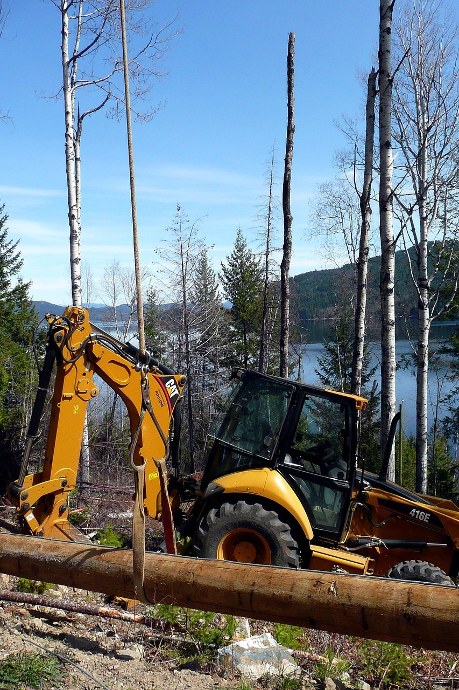
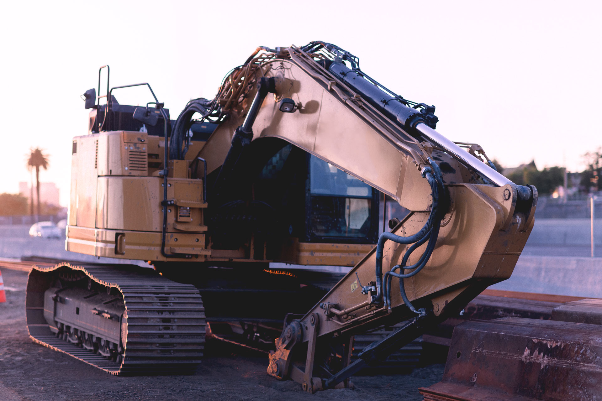
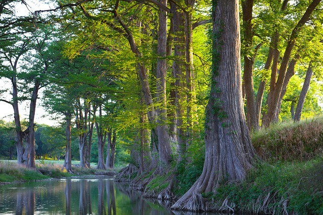
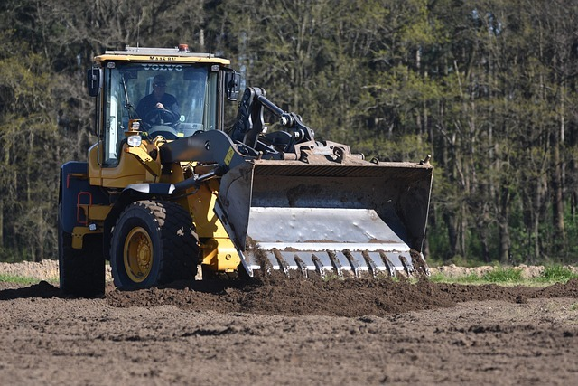

North Georgia · Excavation & Grading
Get more from the land you already own.
At LandMan, the goal isn’t simply to move dirt. It’s to improve the way people enjoy and use their property.
Saved in this browser only. Nothing was sent. Call or text (770) 714-4907 to reach LandMan.
- 01Insured
- 02Experienced equipment operator
- 03Honest communication
- 04Locally owned & operated
Services
Practical work for rural property.
Clearing, brush, pasture, grading, driveways, and site prep. LandMan looks at the property first, then recommends the approach that fits how you want to use it.


The LandMan
Chris Chaney treats the property like it is his own.
Chris brings decades of hands-on work, practical problem-solving, and respect for someone else’s land. He grew up with family roots in farming, then owned a small business, managed pipeline and grading projects, ran heavy equipment, and later flew as a professional pilot.
Preparation, safety, communication, and doing the job right the first time.
Whether the job is an overgrown pasture, drainage, a driveway, clearing, or getting a property ready for its next use, the standard stays the same: practical solutions, clear communication, and care.
About ChrisProcess
Straightforward from the first call.
- 1
Reach out
Call, text, or request a free estimate.
- 2
On-site visit
Walk the property, talk through the goal, and ask questions.
- 3
Clear estimate
A straightforward number, with the approach explained.
- 4
Schedule
You hear what is happening while the work is underway.
- 5
Job complete
The property is cleaner, more usable, and ready for what comes next.
The LandMan promise
Show up. Say what will happen. Finish the job.
We treat your property with the same care we’d expect on our own. Real, practical solutions, work until the job is completed, and respect for your hard-earned dollar.
Talk about your propertyFAQ
Common questions, answered the way LandMan answers them.
Do I need a permit?
It depends on the scope of the project. Many routine property improvements — brush removal, stump removal, gravel driveway repair, fence line clearing, and selective land clearing — often do not require permits. Projects involving new construction, major grading, retaining walls, streams, or extensive land disturbance may require permits or approvals.
During the free estimate, LandMan talks through the project and will say if permitting may be necessary. If the work sits outside this scope, Chris will point you in the right direction.
Are you insured?
Yes. LandMan Excavation & Grading is insured. Proof of insurance is available on request.
Can you remove trees?
Yes — the specialty is small to medium-sized trees, brush, saplings, and selective clearing as part of improving the property. Large, hazardous, or technical removals that need climbing or a crane are referred to a tree service, and LandMan will coordinate with them if you want that. The goal is to improve the property while keeping the trees you want to keep.
How much does land clearing cost?
Every property is different. Price depends on the size of the area, the amount of brush and vegetation, the number and size of trees, terrain and access, whether debris is hauled or mulched, and whether you want final grading or restoration. LandMan gives a free on-site estimate so the number matches the land.